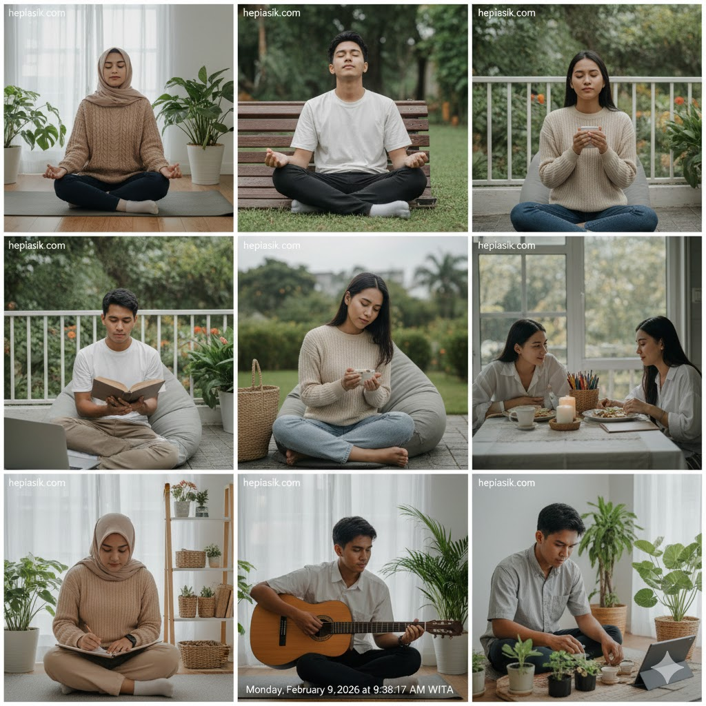
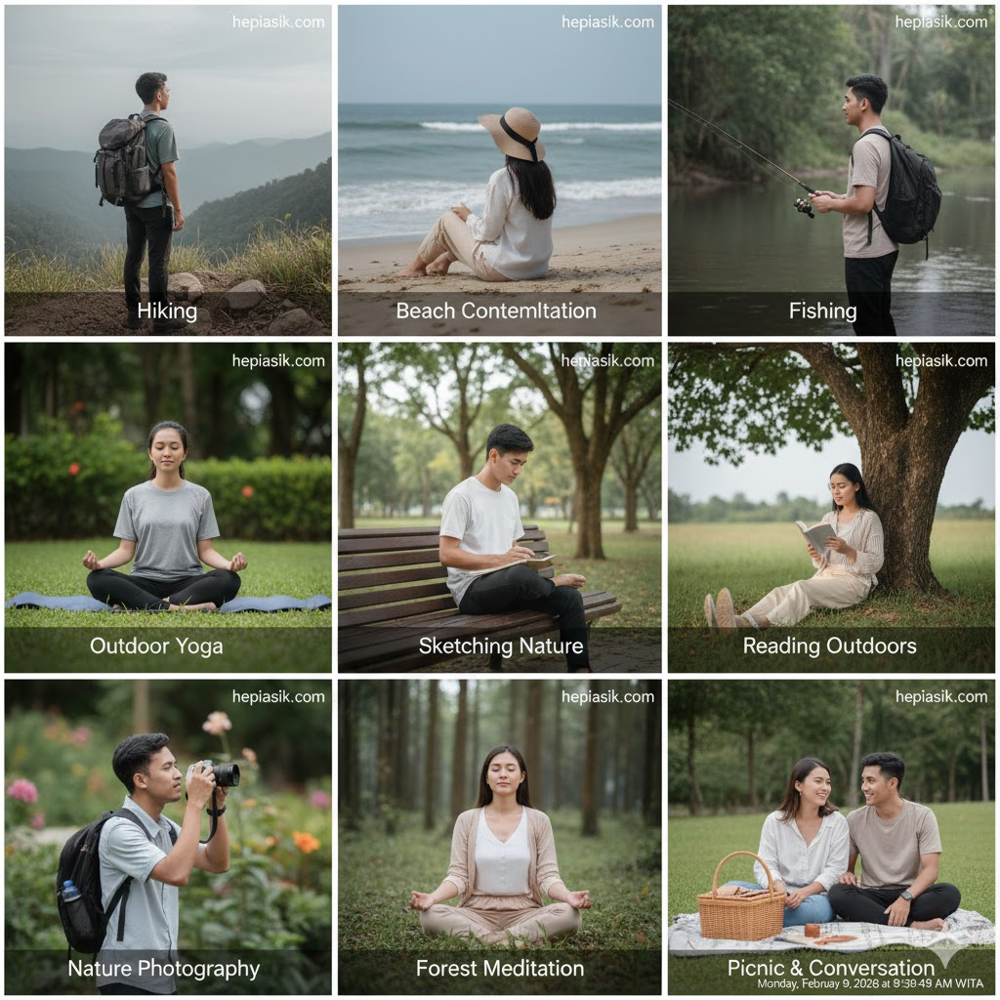

Cara Mengatur Waktu Istirahat Digital Agar Hati Tenang
Memasuki Februari 2026, tantangan terbesar manusia modern bukan lagi kelangkaan informasi, melainkan kelimpahan distraksi yang menggerus kedamaian batin. Keterikatan konstan pada gawai menciptakan kondisi stres kronis yang sering tidak disadari, di mana otak dipaksa memproses ribuan stimulus setiap jamnya. Memahami cara mengatur waktu istirahat digital agar hati tenang merupakan langkah defensif yang krusial untuk menjaga kesehatan mental dan stabilitas emosional di tengah gempuran algoritma yang kian agresif memperebutkan perhatian kita.
Berdasarkan laporan *Global Digital Wellness 2026*, rata-rata individu menghabiskan lebih dari tujuh jam sehari di depan layar, yang berkorelasi langsung dengan peningkatan gangguan kecemasan dan penurunan kualitas tidur. Pemulihan kognitif tidak dapat terjadi jika saraf kita terus-menerus diserang oleh notifikasi. Dengan mengadopsi protokol istirahat yang terukur, kita tidak hanya memberikan ruang bagi otak untuk melakukan regenerasi, tetapi juga mengembalikan kendali atas kebahagiaan kita sendiri dari tangan teknologi ke dalam diri sendiri.
Memahami Ekonomi Perhatian dan Beban Kognitif Digital
Teknologi dirancang secara sistematis untuk menjaga pengguna tetap terikat melalui sirkuit penghargaan dopamin. Di tahun 2026, algoritma telah mencapai tingkat presisi yang sangat tinggi dalam memetakan kerentanan psikologis kita. Cara mengatur waktu istirahat digital agar hati tenang dimulai dengan kesadaran bahwa perhatian Anda adalah komoditas. Cal Newport menekankan bahwa kebebasan sejati di era digital adalah kemampuan untuk melepaskan diri dari kebisingan tersebut. Ia menyatakan:
"Seseorang yang memiliki fokus tajam di tengah dunia yang penuh distraksi memiliki keunggulan kompetitif dan kebahagiaan yang lebih stabil" (Cal Newport, Digital Minimalism, 2019, hlm. 45).
Beban kognitif yang berlebihan akibat *multitasking* digital menyebabkan fragmentasi pikiran yang melelahkan. Saat kita terus-menerus berpindah antar aplikasi, kita mengalami "switching cost" yang menguras energi mental. Insight utamanya adalah membatasi asupan informasi bukan berarti ketinggalan zaman, melainkan upaya menjaga kapasitas berpikir yang jernih. Solusinya, terapkan metode *batching* notifikasi agar Anda hanya menerima gangguan pada waktu-waktu yang telah ditentukan secara sadar.

Manajemen Dopamin: Mengatur Ulang Keseimbangan Otak
Pengejaran validasi instan di media sosial sering kali merusak sirkuit kepuasan alami manusia. Anna Lembke menjelaskan bahwa paparan terus-menerus pada stimulasi tinggi menyebabkan otak melakukan adaptasi yang justru menurunkan sensitivitas kita terhadap kebahagiaan kecil. Ia menulis dalam bukunya:
"Keseimbangan antara rasa sakit dan kesenangan adalah kunci; stimulasi digital yang berlebihan memaksa otak untuk menyeimbangkan diri dengan rasa cemas" (Anna Lembke, Dopamine Nation, 2021, hlm. 62).
Cara mengatur waktu istirahat digital agar hati tenang memerlukan "puasa dopamin" secara berkala. Ini bukan berarti meninggalkan teknologi sepenuhnya, melainkan memberikan jeda agar reseptor di otak bisa kembali normal. Dengan menurunkan ambang batas stimulasi, hal-hal sederhana seperti menghirup udara segar atau berbincang dengan teman akan kembali terasa sangat menyenangkan. Solusinya, tetapkan satu hari dalam seminggu—seperti "Sabtu Tanpa Layar"—untuk mengkalibrasi ulang sistem saraf Anda.
Penerapan Kebiasaan Mikro untuk Kedamaian Harian
Menghindari burnout digital tidak memerlukan perubahan drastis dalam satu malam, melainkan melalui akumulasi kebiasaan kecil yang konsisten. James Clear menyoroti bagaimana desain lingkungan sangat menentukan keberhasilan kita dalam membangun habit baru. Ia menyatakan:
"Anda tidak memerlukan motivasi yang kuat jika lingkungan Anda mendukung perilaku yang benar secara otomatis" (James Clear, Atomic Habits, 2018, hlm. 82).
Jika gawai selalu ada di jangkauan tangan, maka godaan untuk mengeceknya akan tetap tinggi. Cara mengatur waktu istirahat digital agar hati tenang yang paling praktis adalah dengan menciptakan jarak fisik. Solusinya, gunakan area "bebas teknologi" di dalam rumah, seperti meja makan atau kamar tidur, di mana gawai dilarang masuk sama sekali. Kebiasaan mikro ini akan memberikan rasa aman dan tenang yang akumulatif bagi jiwa Anda setiap harinya.
Kecerdasan Emosional dalam Menghadapi FOMO
Ketakutan akan ketinggalan informasi atau *Fear of Missing Out* (FOMO) adalah penggerak utama ketergantungan digital. Daniel Goleman menjelaskan bahwa kemampuan untuk mengelola impuls emosional adalah inti dari kecerdasan emosional yang sehat. Ia menulis:
"Kesadaran diri akan dorongan emosional adalah langkah pertama untuk tidak dikendalikan olehnya" (Daniel Goleman, Emotional Intelligence, 1995, hlm. 72).
Saat Anda merasa cemas karena tidak mengecek ponsel, akuilah perasaan itu tanpa menghakimi diri sendiri. Pahami bahwa sebagian besar informasi digital bersifat sementara dan tidak esensial bagi kebahagiaan jangka panjang Anda. Insight solusinya adalah mengganti FOMO menjadi JOMO (*Joy of Missing Out*)—kebahagiaan karena bisa fokus pada momen saat ini tanpa terdistraksi oleh apa yang dilakukan orang lain di dunia maya.
Pemulihan Aktif Melalui Alam dan Aktivitas Fisik
Istirahat terbaik bagi otak digital bukanlah beralih dari satu layar ke layar lainnya, melainkan kembali ke alam. Aktivitas luar ruang terbukti secara riset menurunkan kadar kortisol dan meningkatkan kejernihan berpikir. Henry David Thoreau, yang mengabdikan hidupnya untuk memahami ketenangan, memberikan refleksi yang relevan:
"Saya merasa hidup paling utuh saat kaki saya menyentuh tanah dan mata saya menatap cakrawala yang luas" (Henry David Thoreau, Walking, 1862, hlm. 14).
Paparan terhadap pemandangan hijau membantu merestorasi perhatian kognitif yang lelah akibat "directed attention" pada layar gawai. Cara mengatur waktu istirahat digital agar hati tenang melibatkan aktivitas fisik yang membumi, seperti berkebun atau berjalan kaki sore di taman. Solusinya, jadwalkan minimal 20 menit per hari untuk berada di luar ruangan tanpa membawa ponsel untuk merasakan kedamaian yang disediakan oleh alam sekitar.

Membangun Resiliensi Mental Terhadap Tekanan Informasi
Ketangguhan mental diperlukan agar kita tidak mudah terombang-ambing oleh tren digital yang datang silih berganti. Angela Duckworth menjelaskan bahwa ketabahan (*grit*) juga mencakup kemampuan untuk tetap pada tujuan yang bermakna meskipun ada godaan eksternal. Ia menekankan:
"Ketabahan bukan hanya soal kerja keras, tapi juga soal mengetahui kapan harus berhenti demi menjaga keberlanjutan energi" (Angela Duckworth, Grit, 2016, hlm. 94).
Dalam konteks digital, resiliensi berarti memiliki kekuatan untuk mengabaikan konten yang tidak selaras dengan nilai-nilai hidup Anda. Cara mengatur waktu istirahat digital agar hati tenang melibatkan filtrasi informasi yang ketat. Insight solusinya adalah melakukan audit akun yang Anda ikuti secara berkala; jika sebuah akun memicu rasa rendah diri atau kecemasan, jangan ragu untuk melakukan *unfollow* demi menjaga ekosistem mental Anda tetap bersih.
Ritual Sebelum Tidur untuk Kualitas Istirahat yang Dalam
Kualitas tidur adalah pondasi utama ketenangan hati. Cahaya biru dari layar gawai mengganggu produksi melatonin, hormon yang mengatur siklus tidur kita. Tony Schwartz menyarankan agar kita menghargai ritme biologis tubuh untuk mencapai performa yang berkelanjutan. Ia menulis:
"Istirahat yang tidak memadai adalah penghancur kreativitas dan stabilitas emosional yang paling efektif" (Tony Schwartz, The Way We're Working Isn't Working, 2010, hlm. 56).
Cara mengatur waktu istirahat digital agar hati tenang harus menyertakan ritual penutup hari yang bebas layar. Solusinya, terapkan aturan "Jam Malam Digital" setidaknya satu jam sebelum tidur. Gunakan waktu tersebut untuk membaca buku fisik, menulis jurnal, atau melakukan peregangan ringan. Ritual ini memberikan sinyal kepada otak bahwa waktu kerja dan stimulasi telah berakhir, sehingga Anda dapat masuk ke alam mimpi dengan hati yang tenang.
Seni Mencintai Diri Sendiri Melalui Keheningan
Banyak individu merasa takut akan keheningan karena saat itulah mereka harus berhadapan dengan pikiran mereka sendiri. Namun, Erich Fromm berargumen bahwa kemampuan untuk sendirian adalah prasyarat untuk mampu mencintai dan merasa damai. Ia menegaskan:
"Kemampuan untuk merasa nyaman dalam kesendirian adalah tanda kematangan batin dan kemandirian emosional" (Erich Fromm, The Art of Loving, 1956, hlm. 112).
Istirahat digital memberikan kesempatan langka bagi kita untuk melakukan dialog internal yang jujur. Cara mengatur waktu istirahat digital agar hati tenang bukan tentang melarikan diri dari teknologi, tapi tentang kembali kepada diri sendiri. Kesimpulannya, keheningan bukanlah sesuatu yang harus ditakuti, melainkan ruang suci di mana kebijaksanaan dan ketenangan batin tumbuh. Solusinya, luangkan 5 menit setiap pagi untuk duduk diam dan bernapas tanpa gangguan apa pun sebelum Anda memulai hari digital Anda.
Manajemen Fokus: Deep Work di Tengah Kebisingan
Kemampuan untuk fokus adalah bentuk baru dari kekuasaan pribadi di tahun 2026. Dengan mengatur waktu istirahat digital secara disiplin, Anda sebenarnya sedang mengumpulkan energi untuk melakukan pekerjaan yang benar-benar bermakna. Cal Newport kembali menekankan pentingnya ruang kognitif yang jernih:
"Kedalaman berpikir hanya bisa dicapai jika kita berani menutup gerbang terhadap interupsi yang tidak perlu" (Cal Newport, Deep Work, 2016, hlm. 102).
Cara mengatur waktu istirahat digital agar hati tenang yang efektif akan berdampak langsung pada produktivitas Anda. Saat hati tenang karena tidak diburu oleh notifikasi, pikiran menjadi lebih tajam dan kreatif. Insight solusinya adalah memperlakukan waktu istirahat digital Anda sama pentingnya dengan janji temu bisnis yang krusial. Masukkan ke dalam kalender kerja Anda dan patuhilah dengan integritas yang sama.
Hubungan Sosial Nyata Sebagai Penawar Kesepian Digital
Ironi dunia digital adalah kita semakin terkoneksi namun merasa semakin kesepian. Robert Waldinger, melalui studi panjangnya tentang kebahagiaan, menemukan bahwa hubungan fisik yang nyata adalah penentu utama kualitas hidup. Ia menyatakan:
"Kehangatan hubungan manusia adalah pelindung paling kuat terhadap stres dan penyakit mental" (Robert Waldinger & Marc Schulz, The Good Life, 2023, hlm. 28).
Mengganti interaksi layar dengan pertemuan tatap muka adalah bagian inti dari cara mengatur waktu istirahat digital agar hati tenang. Suara, sentuhan, dan kehadiran fisik memberikan nutrisi emosional yang tidak bisa digantikan oleh emotikon di layar. Solusinya, jadwalkan waktu khusus setiap minggu untuk bertemu orang tersayang tanpa ada ponsel di atas meja makan, untuk benar-benar merasakan kehangatan koneksi manusia yang tulus.
Estetika Keteraturan: Menciptakan Oase di Dunia Digital
Keindahan dan keteraturan lingkungan digital kita juga mempengaruhi ketenangan hati. Alain de Botton menyarankan agar kita memperlakukan "ruang digital" kita dengan kepedulian estetika yang sama seperti ruang fisik. Ia menulis:
"Keteraturan visual memberikan rasa aman dan mengurangi beban mental yang tidak perlu" (Alain de Botton, The Architecture of Happiness, 2006, hlm. 142).
Cara mengatur waktu istirahat digital agar hati tenang juga melibatkan pengorganisasian aplikasi dan file yang berantakan. Solusinya, lakukan kurasi terhadap folder gawai Anda, gunakan *wallpaper* yang menenangkan, dan hapus aplikasi yang hanya menimbulkan rasa bersalah atau kecemasan. Ruang digital yang bersih adalah cerminan dari hati yang tertata, memungkinkan Anda untuk beristirahat dengan lebih tenang tanpa merasa dihantui oleh "tumpukan" tugas digital yang belum selesai.
Kesimpulan: Ketenangan Adalah Pilihan Sadar
Pada akhirnya, teknologi hanyalah alat, dan kita adalah pengemudinya. Cara mengatur waktu istirahat digital agar hati tenang bukan tentang membenci kemajuan zaman, melainkan tentang menghormati kebutuhan biologis dan emosional kita sebagai manusia. Kebahagiaan sejati di tahun 2026 ditemukan oleh mereka yang berani menetapkan batasan, menghargai keheningan, dan memilih kehadiran nyata di atas validasi maya.
Mulailah hari ini dengan langkah kecil. Matikan satu notifikasi yang tidak perlu, letakkan ponsel Anda di ruangan lain saat makan malam, dan biarkan hati Anda kembali menemukan ritme tenangnya. Kedamaian batin bukanlah sesuatu yang bisa diunduh; ia adalah sesuatu yang kita bangun melalui pilihan-pilihan sadar dalam keseharian kita. Selamat beristirahat secara digital, dan temukan kembali keceriaan asli yang ada di dalam diri Anda.